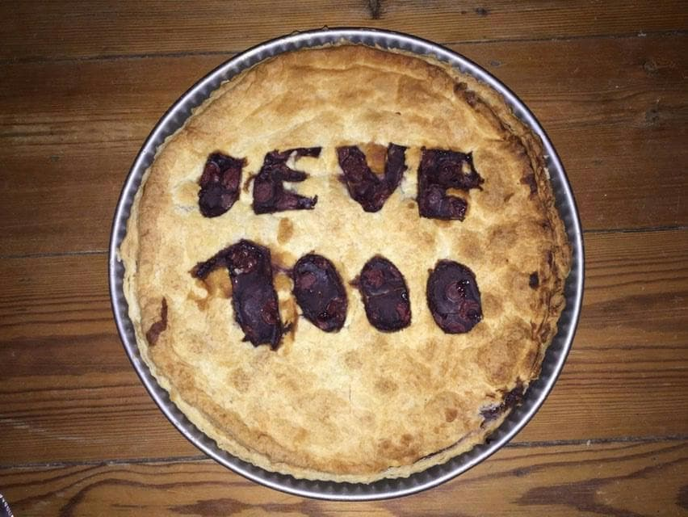
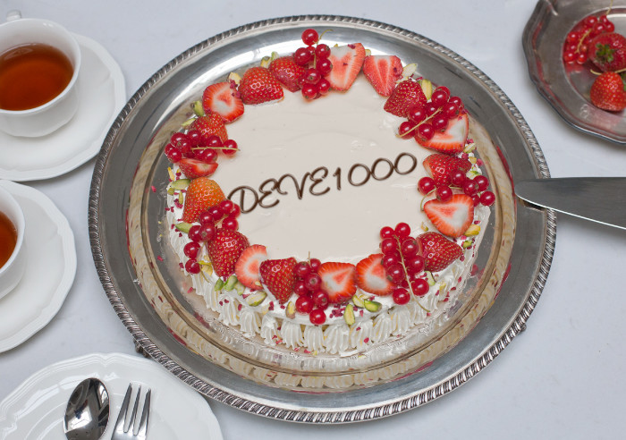

The cake in the first photograph dates from last year. It was baked and eaten by my friend — now also my neighbour — around the days of my birthday that year. I have never seen the real cake. Only months after, when I digitally created the second picture for an exhibition catalogue with online templates of PhotoFunia, I received this picture of the real cake from my friend. She never gave me the birthday cake because she didn’t feel like attending the party, so she ate the cake instead.
To still the hunger for digestible art and as a response to the homogenization of taste, I chose to present myself as a sweet fruit cake. ‘DEVE1000’ is a name for my brand of being, invented a few years ago. At first it was designed to satirically thrive in the wave of hashtags, but it very fast became a comfortable tool to manage life within the public arena. A multi-tool, as it were, one you can use outdoors, indoors, during all seasons and in all kinds of scenarios. The public arena is another title for the bigger bubble. There is no fear in admitting that I - as most others - find my self in a tiny bubble that is shielded off from a larger part of the bigger bubble, the one that includes the space outside of the systems of museums, galleries, art education and also includes these bubbles in itself too.
To match the futuristic identity of innovation the number ‘1000’ was added to my new name, as an impressive element of numerical measurability. It could be read as an improved version of me, the latest edition, refurbished. If a first name would refer to the craftsman you are, and your last name to the philosopher you are then it is certain that as an artist we all need third name for the entrepreneur we are.
The domain name .net is a generic top-level domain used in the Domain Name System of the Internet. The name is derived from the word network. The word network hints two contexts: mass-media networks with a cybernetic echo to it but also management terminology. The first sounds very impersonal and robotic while the second suggests a kind of social Machiavellianism.
Along with the Internet Protocol (IP-system) the Domain Name System places every user, every machine, every host in a grid and names it. The DNS is a spatial map of the Internet. Every URL or email address is a unique location with a specific address on this electronic map. Thus in an urban analogy the internet produced a new country, state, neighbourhood or whatever word is accurate to describe this ever-growing place. To travel on this electronic map takes such little time that we cannot compare it to the travel speed of the world of flesh and embodiment. Not only because in the world of flesh we deal with gravity, weight, time and physical distance but because the world of electronic information is free of roads. At the click of a mouse you are ready to jump from any point to another. In fact, there is a one-way route from every location to any other location on the map and these roads are made for air traffic. The electronic information world is in fact a globally connected village where transportation takes place at such a speed that we can speak of simultaneity. It means being here, there and everywhere all at once; a new kind of geography.
A brand-name comes with authorial anonymity (or at least the acknowledgement of dispersed authorship). This anonymity keeps you, as the viewer, in the dark and eventually leaves a lot to your imagination as well. The master mind can obscure itself and its intentions with a powerful instrument: fiction. The difference between fiction and imagination lies in the reciprocal character of both. Fiction is what presented to you and your imagination is needed to understand the fiction constructed for its reader or its spectator. Both these terms (ideas, concepts) have little to do with the imaginary, as in the magical, as in fantasy or the unreal.
In a conversation held in 2014 by Erik Hagoort, he initiated an attempt to have this conversation as if the participants were an orchestra without conductor. They tried to avoid questions and answers in their attempt to exclude authority and hierarchy. A few interesting lines are drawn between art and empathy in this conversation: an understanding of empathy as an act of imagination is an evident, undeniable bridge between art and morality, perhaps the cake and myself. Your imagination allows you to see yourself as if you were in another's position. This aspect of empathy is closer to aesthetics and the visual image than we would assume. Apparently the word 'path' in Classical Greek means 'to suffer, to feel'. The Classical Greek word is much more closer to a visual approach on feeling: seeing as if it is real, moving into another feeling. 1
Empathy has an ability to invite everyone to be author and to be an audience at the same time, it can even invite one to be co-author. Any head of any organ with advantage of anonymity then comes down to the plane of the public body. Why not lighten the burden of authorship? As an act of empathy it can bring everyone down or up to the same plane. There will be no point in pointing fingers when there is no longer a clear direction to point at with no clear intentions to blame. The hierarchy of the author diminishes once there is no longer one person with the bird's eye view privilege down on its preys, but everyone can enjoy the view. Cloudiness can be enjoyable and enlightening. Empathy creates a sea where we are all fly fish plunging for a moment of overview on the horizon. As it happens we can all freely morph between fish, bird, author or audience, artist or participator, producer of consumer, any part of the whole of a public body. Of course there are many pleasures to hierarchy too but mostly there is a safety to being part of the public body as long as it stays flat.
While we share the plane with many of our equals in this hypothesis, the authorship that once was a burden has without noticing turned into a form of authority. The differences between these weighty words are little. Actions of these co-authors, players of the same game, can imply a chain of reactions towards the others. This reaction would otherwise be only ascribed to authorial authority. Being an orchestra without a conductor is not easy at all and therefore quite ambitious. My 'brand of being'-corporation of three workers (the craftsman, the philosopher and the entrepreneur) is measured next to common public bodies and institutions.
Not necessarily everyone on the plane of imagination needs to agree. Empathy does not automatically imply sympathy. When I empathize, that doesn't mean I am agreeing too. Consensus is not a condition for imagination. Pati in latin, pashein in Greek: to become involved without becoming author. The passivity of being part of a group is not a tragical truth. "Passivity doesn't have a paralysing effect at all, it only paralyses when we think that we define and should define our lives actively and autonomously." 2 Empathy as an act of imagination does not force to imagine actively (whereas sympathy might). Sympathization is build on the feeling of knowing what it is to be in another's place because it is written in the rules of reality. Fiction waits patiently for your passive leap of empathy intertwined with imagination. You are free to do so.
The comfort of relating to such a corporation or a public body or in some cases even a religious group and its activities and responsibilities lies right next to the freedom or the ease to be anonymous, both in a safe space. Safety is often falsely understood as a fear that is present outside these borders of protection. I believe in this case of safety (of being part of a group, a public body of simply being anonymous) creates a huge freedom to think and act in methods very different to existing and common conditions. It is this freedom and the potential of this freedom that can be meaningful to today's exhibition culture, almost as an art practice itself.
In the attempt to add the word fiction to the word institute Daniel Blanga-Gubbay stumbles upon the fact that institutes are a fiction themselves. When thinking of fictional institutes we are not referring to Terry Gilliam's Ministry of Information or Ridley Scott's The Tyrell Corporation, a scientific discipline called solaristics. Most of these examples from dystopian movies intend to highlight the failures of bureaucratic and technological institutes by exaggerating common characteristics of institutions of the realm of reality. Daniel expressed a different interest in his lecture: "(...) I am referring here to the possibility of investigating something else, namely fictional institutions that we do not encounter in fiction, but rather that appear directly in front of us, camouflaging themselves as real ones." 3 Institutions of reality are in fact socially constructed, not in a trivial fictional way, but rather in a way fiction is invented or created. "The joke is on us," says Jerry Monaco, "These institutions are socially constructed "as-ifs"(...) as if the bank contained the money in a box; as if the money were backed by "gold" and "silver"; as if gold and silver were worth anything; as if gold could buy your life by the hour or the day." 4 We have harboured such passionate grudge in the past and today still for this institutional fiction that we have created ourselves. We treat institutions as natural and institutional critique therefore starts to feel as a natural reaction of the individual.
The absence of fiction, thus realism, has become a shield of the fictional institution to defend itself from critique. A shield that has probably also naturally grown out of the fear that we might question the institutions solidity, uncover its fiction and afterwards find its possibility of being different than it is now. I too have a common, strong and irrational love for solid things that are here to stay but what a freedom it would create for solid things to be malleable like clay again.
"Lucretius tells us that empty space is just as concrete as solid bodies." 5 The perimeters of poetry, philosophy and science weren't very clear in Ancient times, perhaps they even overlapped wholly. Again, I wish not to talk about imaginative storytelling but I wish to point out fiction's capacity to change and innovate that what pretends to be immalleable and rigid (and perhaps, institutional). And I believe it does so with more clarity and precision than tools of realism.
In Italo Calvino’s Six Memo’s for the Next Millennium, he presses the importance of fiction in writing. The memo’s were a series of six talks in which the term poetry could refer to any type of poetic communication — literary, musical or visual. Calvino chose to expand on certain values in literature that were worth recommending to the next millennium. These six talks, qualities or peculiarities of poetry (of which he could only finish five during his lifetime) were named ‘Lightness’, ‘Quickness’, ‘Exactitude’, ‘Visibility’ and ‘Multiplicity’. These values seem very relevant to other forms of writing too nowadays. After all Calvino’s aim was to write for the upcoming millennium because the future and fate of literature and the book-object was being questioned so much. Despite writing and communications apparent transformations in this millennium, despite an ongoing shift from book-culture to net-culture, poetics are here to stay in new evocative ways, ways that are not off subject for art.
Borges enters these memo’s twice, first in the chapter ‘Quickness’ and again in ‘Multiplicity. His works have a way of multiplying space and time. In Garden of Forking Paths the idea of 'punctual' time as Calvino describes it passes by: “I reflected that everything happens to everyone precisely, precisely now. Centuries upon centuries, and only in the present do things occur; innumerable men in the air, on land and at sea, and everything that actually happens happens to me”; then the idea of time determined by will, in which the future appears as irrevocable as the past; and finally the story’s central idea, a multiple, ramified time in which every present forks into two futures, so as to form “a growing, dizzying network of diverging, converging, and parallel times”. 6
Elaborating on this idea of network or multiplicity Calvino clarifies that for other writers such as Proust and Perec too this network that links all things consists of spatial-temporal points, rustling in infinite multiplication of the dimensions of space and time. To not be submerged in the inexhaustible paths of this kind of network of possibilities and the arbitrary nature of freedom, Perec constructs rules not only for his protagonist but also for his own writing strategies. These constraints are in turn also quite random but they function as a playground for unconventional thinking rather than limiting borders. 6
A brand-name comes with the acknowledgement of dispersed authorship (or even authorial anonymity). An art practice, as we now know, is fragmented into multiple roles or tasks. Whether all your pieces in the art game are controlled by yourself, is up to you. I am not thinking of architectural practices and industrial workshops like Olafur Eliason, Jef Koons or Atelier Van Lieshout, as there is little doubt in stating that we are all our own brand or company even without a few dozen employees. One or many, all a shared slightly corporate personality. The philosopher, the craftsman and the entrepreneur are in most of the cases only you, the artist, the master-multitasker by default. One or many, all a shared slightly corporate personality.
Perhaps as a master-multitasker you would like to be a free and autonomous artist because you would rather not depend on others to complete your one-man team, free from authority, systems and institutions. Others might have already discovered that to not be burdened by the weight of authority all by yourself it is best to team up. Humans have always been surviving relationally, so the network is most definitely not to be denied. "Artist like to boast of their independence from market and state. Even their reliance on social relationships and networks is still a sensitive issue. In the name of artistic freedom almost any form of commitment will be denied." 7 Two things are said here. In his statement there is a hint of artistic autonomy but also of social autonomy. Artistic autonomy implies this freedom of content, style or an independence related to a form of authority. While social autonomy talks about reclusion or this myth of the self-made man. Already in the 80's the artist is not only the eccentric, bohemien outsider but also a model citizen, creative entrepreneur, self-made man or even self-made entrepreneurial citizen. Yet the romance of nomadism hasn't left us yet. Geographical mobility, flexibility, global networking are musts to the life of the bienale-hopping artist, traveling from one non-place to the next. 7
There is a vivid aura of inauthenticity around the consideration of your practice or artwork in economic terms. To exclude the economic aspect of art from this discourse would offer an ignorant view. There is a complex wish to on the one hand to be a succeeding artist-entrepreneur and on the other hand to distance oneself from all measurable aspects of the entrepreneur lifestyle. This is a contradicting desire because our content is at stake! Who wants to risk their sincerity (or their work's sincerity) by associating too much with market or state?
The market and its entrepreneur — keeping in mind the art-market too — are heavily demonised, if not, critiqued. In reality, there is no being in favour of it or being against it, because we are inside it. An entrepreneur could be compared to a game keeper that makes sure every product and person can also join the market, the game in which most of us are already playing a demanding role in. There are no outsiders to this game. Art can not escape the power game. The market is inevitable but not unalterable. The only way out is through.
The criticism takes many forms. There is a type of direct criticism towards the market, which is close to ironic criticism (only seemingly embracing the commercial aspect), which is neighboured by critical complicity, that in its turn is vulnerable to criticism again. Any form of measurability is in fact criticised but somewhere in between ironic criticism and critical complicity is our way out - that is, as said before, through.
In 1994 Andrea Fraser insisted that the condition to artistic autonomy is dependency. This contradictory principle is still of accurate value to us today. Institutional critique artists (such as Fraser) made impossible claims at the beginning. “An undialectical approach might be to proclaim, Artists against institutions! Reintegrate art into everyday life! Total freedom or bust! Autonomy or death!" she writes to deny: "Museums have been built and must be filled. Critics and curators are trained and have an interest in being employed, gallerists must show. Investments have been made and the field must reproduce itself.” 8 There is no art or being an artist outside of the art system. Whenever we try to transform what it means to be art or an artist, we only broaden the field of the art system. The public arena is becoming the broadened field of the art system.
There is no reconciliation of art and life. Reconciliation of art and life would mean that us artists would no longer separate ourselves from mass media by a thin illusionary layer. Many times ever since Fluxes many attempts were made for this reconciliation, yet we have not reached that point. Perhaps art has penetrated Life a long time ago and we did not notice? After escaping the picture plane and after escaping the gallery, the field has expanded. Has art merely pushed the boundaries of life further away as it expanded its own field? Or has it truly penetrated the field of life and do the peripheries of both concepts now co-exist as one or do they co-exist as a checkered field? What part of the public arena, part of life, is that part that we so desperately have been trying to glue to art?
In the attempt to add the word fiction to the word institute Daniel Blanga-Gubbay stumbles upon the fact that institutes are a fiction themselves. When thinking of fictional institutes we are not referring to Terry Gilliam's Ministry of Information or Ridley Scott's The Tyrell Corporation, a scientific discipline called solaristics. Most of these examples from dystopian movies intend to highlight the failures of bureaucratic and technological institutes by exaggerating common characteristics of institutions of the realm of reality. Daniel expressed a different interest in his lecture: "(...) I am referring here to the possibility of investigating something else, namely fictional institutions that we do not encounter in fiction, but rather that appear directly in front of us, camouflaging themselves as real ones." 3 Institutions of reality are in fact socially constructed, not in a trivial fictional way, but rather in a way fiction is invented or created. "The joke is on us," says Jerry Monaco, "These institutions are socially constructed "as-ifs"(...) as if the bank contained the money in a box; as if the money were backed by "gold" and "silver"; as if gold and silver were worth anything; as if gold could buy your life by the hour or the day." 4 We have harboured such passionate grudge in the past and today still for this institutional fiction that we have created ourselves. We treat institutions as natural and institutional critique therefore starts to feel as a natural reaction of the individual.
The absence of fiction, thus realism, has become a shield of the fictional institution to defend itself from critique. A shield that has probably also naturally grown out of the fear that we might question the institutions solidity, uncover its fiction and afterwards find its possibility of being different than it is now. I too have a common, strong and irrational love for solid things that are here to stay but what a freedom it would create for solid things to be malleable like clay again.
Change of the perception of life or change of the perception of art can be a substitute for the long desired reconciliation of life and art. By fictionalizing ourselves as artists we can scale the field of art to the size of institutions out of the realm of reality which we want to alter. Precisely this is the way to change. There is in fact to other way, than facing life. Even if we could conclude that there is no reconciliation, there is a demand for alternate strategies, in art and in life.
________________________________________
A net is described by Umberto Eco as one of the three types of labyrinths. The first type is a linear labyrinth, a one-way route without choices to be make with the Minotaur in the middle of the road or the centre of the labyrinth. The second type is a maze. It offers you choices between alternative paths, sometimes even multiple entrances. Some of the paths are dead ends, other generate new branches to paths that in turn display the same kind of deviations. In this tree of right and wrong choices there is only one way out. The trial-and-error process is the maze’s Minotaur. Without further explanation, between brackets, Eco describes that the word meander might be the best way to characterise how the third type of labyrinth differs from the plain labyrinth and the maze. The net, the third type, is a tree with corridors connecting every point with every other point, transforming in a polygon. “The territory of the United States does not oblige anybody to reach Dallas from New York by passing through St Louis, Missouri; one can also pass through New Orleans.” The comparison with a polygon is still misleading: a polygon has some borderlines. The abstract model of a net has neither a centre nor an outside.
In a structure without an outside or a periphery, you are always part of the structure, in this case a net, since there is no place that remains outside of the net, there is also no global vision to obtain. No bird's eye vision on all the possible roads, traces, branches of the web, only a local view on neighbouring links. "Blindness is the only way of seeing locally." 9
It is from 'Inside The White Cube' that the tale of verticality and horizontality has been first told to us and ever since it has been evolving as if the tale was a prophecy. 10 The notion of verticality is related to history, hierarchy, a view from above on layers. An overview on the landscape from a bird's eye perspective can offer insights that a person from within the landscape can not obtain. The museum as institution has build itself many floors and stores of history to obtain the height to enjoy this notion of verticality. Horizontality has perhaps evolved the most. It refers to the flat world we are living in, where height is no longer desired but width or lateral span is. It is being globally active, having a wider access to the network and high speed mobility to harvest your wide and international garden.
There is no lack of depth in the flat world! For the horizontal lifestyle we are now approaching, that of the network, that of the relational, that of connection, that of mobility and that of distribution, that of the surface and that of the flat world, there is different kind of experience of deepness. Not that of surface to bottom but that of the nearest to the farthest is depth of field. The only way out is through.>
________________________________________
"Change and innovation are possible because of our ability to imagine a 'fictional reality' next to our 'real' world," as explained by Pascal Gielen in 'Institutions imagined'. 11 The museum is a peculiar institution. "{the museum} was seen as the embodiment of art’s exclusion from social life" 12 but apparently the opposite is true. The museum is also the first public ritual where one engages one-on-one with the artwork, a ritual that is for the individual to meet the artwork. The museum institution is one that has been over the years a shelter for critique towards its own existence and one that is constantly been fought ever since the 70's by the ideology of creativity, armed with the ideology of innovation, arm in arm with the ideology of flexibility. It is believed to be slow and heavy, perhaps because it drags along the history of art. It fails to be as fast the gallery space that can, as once introduced by O'Doherty in 'Inside The White Cube', clinically disarm itself from the ballast of history and focus on space itself. 10 It is from this book that the tale of verticality and horizontality has been first told to us and ever since it has been evolving as if the tale was a prophecy. The notion of verticality is related to history, hierarchy, a view from above on layers. An overview on the landscape from a bird's eye perspective can offer insights that a person from within the landscape can not obtain. The museum as institution has build itself many floors and stores of history to obtain the height to enjoy this notion of verticality. Horizontality has perhaps evolved the most. It refers to the flat world we are living in, where height is no longer desired but width or lateral span is. It is being globally active, having a wider access to the network and high speed mobility to harvest your wide and international garden.
Writers like Pascal Gielen and Sloterdijk believe that on the horizontal plane there is a lack of depth! 11 But for the horizontal lifestyle we are now approaching, that of the network, that of the relational, that of connection, that of mobility and that of distribution, that of the surface and that of the flat world, there is different kind of experience of deepness. Not that of surface to bottom but that of the nearest to the farthest is depth of field.
As the artist-philosopher, the artist-craftsman and as the artist-entrepreneur, my team of the self experiences a shift: one from art as production power (initially supported by the museum) to art as exhibition power. To manage this exhibitionistic turn, we must not forget the role of the artist-entrepreneur because "Above and beyond the artwork," von Hantelmann argues "that it is the format of the exhibition that is the key factor in art’s relevance to society." 12 It is in this element art's performativity might be found in the future.
The word network hints two contexts: mass-media networks with a cybernetic echo to it but also management terminology. The first sounds very impersonal and robotic while the second suggests a kind of social Machiavellianism. These contexts naturally fit to be the backdrop of a word romantic artists or original content-makers often flinch from: business. But the emergence for alternative politics is here because so is the market. Needless to say the market is a two-way street: it is the force that many try to avoid and the system that others try to appropriate in a poetic practice that might change the rules of the conventional game and alters its content
Craig Saper introduces the term 'sociopoetic' in his book 'Networked Art'. Saper himself tries to shine light on what most authors of history of new media forget: (how Fluxus made) networking situations into artworks. He names Asgen and other assemblings, Warhol, Mail Art and Art Strikes and Beuys’ social sculpture but only achieves to explain these systems, processes and situations when he labels them with his very convenient term, intimate bureaucracy. The oxymoron does not imply performance art mocking business but the direct respond by imitating an alternative institutional system. 13
Saper even suggests that these types of works slowly, at first ironically, entering the bureaucratic mass-marketed realm, are the very basis for the new productive mythology surrounding the electronic World Wide Web. The design of cyberspace might have been generated out of another environment than that of artists who attempted to make living-art. Though there is a parallel between the radical ways these examples of Networked Art tried to enter social life and the business-tinted hyperconnecting global art scene we have created.
The non-commercial is forever associated with the spiritual. The material, the superficial, on the opposite end of the spectrum, is associated with the commercial. Perhaps this separation derives from Christianity; a common distinction between the body and the soul. Groys accurately points out that before Nietzsche declaring God's death, the soul was more important that the body. Only God could see your soul and He couldn't care less about the appearance of your body. Once God was no longer here, there or everywhere, "the soul became the sum of the relationships into which the human body in the world entered. (...) The modern subject now has a new obligation: the obligation to self-design." 14
Another vacancy added to the polychronic life of an artist. Or is the role of the entrepreneur the same as that of the designer? We might not need a entrepreneur after all but a designer, because designers have one foot set in the economic scene and one in the political. The corporate personality is now shared with a new part of ourselves: the designer.
While trying to defend how art will keep failing to enter politics Groys also points out the defeat of the contemporary art system to the contemporary mass media machine. Yet the job of our self-designer is to be part of the contemporary mass media machine. The only way out is through. This task was also assigned to our artist-entrepreneur when facing the market.
Along with the embracing of yourself or myself as a brand, hopefully comes the strong awareness of this invention definitely being a fictional (all-in-one) persona. Does the fictional persona live in equally fictitious world? What landscape is its habitat? How does that relate to the world of flesh and embodiment? Would it eat the smooth creamed computer generated non-existent cake or the real slightly burned cake that is made in the oven of my neighbours? Maybe the power play of this persona is the ability to function in our physical reality and therefore it might not even need a fictional place to reside. For example the refurbished version of myself, the cyborg I imagine it to be, needed — in order to manage its credibility — an other worldly location, DEVE FALLS. 15
________________________________________
When speaking of a reconciliation of art and life, we often imagine a reunion between the art world and domestic life. Let's not forget that there is far more in the public arena than these two bubbles. Pascal Gielen has described the artists path with a favourable analogy between the individual automobilist, shielded off from the public road by his metal vehicle, and the hypermobile artist, biënale-hopping around the globe. Both unaware of their surroundings while they race through public roads, make several pitstops. Gielen draws the road map and names artists pitstops 'the domestic space', 'the peer space', 'the market' and 'the civic space of public recognition'. I agree with this thought experiment for the feeling of freedom the automobilist (but also that of the hypermobile artist) is very reliant on an entire network of motorways, fuel suppliers and traffic regulations. "Artistic autonomy, in other words, is possible only when it is collectively supported. This has been termed 'autonomy via heteronomy'," he writes in 'Mobile Autonomy' referring to his own term from another book 'The Murmering of the Artistic Multitude'. 16
At a certain point Gielens road map turns into a dystopia. The market space is describes as a sterile non-place that is contagious and that is penetrating the domestic space (f.e. the Internet) and the peers space (measurable jealousy). He claims the market's subjection to calculation and measurability tames our 'wild creativity'. 16 I strongly believe the way to creativity is not de-routing when steering towards computer programmes, formats and home entertainment creativity but rather new branches and roads are being created through electronic innovation. Calculation is indeed the order of the day but it steers us to new horizons and not to mediocrity. In Dataism, a contemporary ideology, there is in fact little difference between the so-called degenerating electronic and the fleshy creativity of the human. The computer that generated the fake cake as wel as the physical round brown cake are no more than dataflows according to Dataism. This may strike many as some obscure post-human religion but reality is that dataism is most firmly entrenched in to pertinent disciplines: computer science and biology and it has already conquered these fields. This reality is far less individual than we blame the information society to be. Being part of the dataflow, means up giving in your privacy, your autonomy and your individuality. "Who writes Wikipedia? All of us". 17 More connection is more desired by dataists. Feeding the information flow is key. Adding all that we know of to the Internet-of-all-things. It is a collaboration of everyone and it is already happenings right now. Stating that humans and our carnal creativity is no more that biochemical algorithms, only brings us to an equal plane with all other matter and data on earth. 17
Strangely, there is a relation between how dataists perceive the network of dataflows and algorithms and how Bruno Latour's Actor-Network Theory (ANT) perceives agents and assemblages. Latour's view was, similar to that of the dataists, very atomical too. Every actor on the network can be an assemblage of many other actor. It is most definely not entirely the same because actors of an assemblage are everything that make this assemblage possible. For example, the flour, the oven, my friend and the parthy are actors of the assemblage of the cake but the algorithms of the cake as dataists perceive it have little to do with the birthday party. Though in their way of networked thinking there is a similar notion but the most important similarity between Dataism (quite a post-human scientific ideology) and Latour's social thoughts, is that he believed that the agency of an object within a network could be the same as a human. There was within the ANT no different between lifeless en lively, as there is not in the distinction of dataflows and algorithms. 18
A net is described by Umberto Eco as one of the three types of labyrinths. The first type is a linear labyrinth, a one-way route without choices to be make with the Minotaur in the middle of the road or the centre of the labyrinth. The second type is a maze. It offers you choices between alternative paths, sometimes even multiple entrances. Some of the paths are dead ends, other generate new branches to paths that in turn display the same kind of deviations. In this tree of right and wrong choices there is only one way out. The trial-and-error process is the maze’s Minotaur. Without further explanation, between brackets, Eco describes that the word meander might be the best way to characterise how the third type of labyrinth differs from the plain labyrinth and the maze. The net, the third type, is a tree with corridors connecting every point with every other point, transforming in a polygon. “The territory of the United States does not oblige anybody to reach Dallas from New York by passing through St Louis, Missouri; one can also pass through New Orleans.” The comparison with a polygon is still misleading: a polygon has some borderlines. The abstract model of a net has neither a centre nor an outside.
In a structure without an outside or a periphery, you are always part of the structure, in this case a net, since there is no place that remains outside of the net, there is also no global vision to obtain. No bird's eye vision on all the possible roads, traces, branches of the web, only a local view on neighbouring links. "Blindness is the only way of seeing locally." 9 But there is no exit to the network we are part of, the only way out is endlessly through.
________________________________________
We have been trying to glue social life to art for many years in attempt to elevate art's effectiveness or retrieve art's functionality. Some are doubting its sincerity and aside from that some are even doubting about the artists sincerity itself and wondering if art has a societal impact and if so, how it is performed.
And though the museum is sometimes perceived as an ivory tower, it is through conventions as these that art's social reality can be changed. "The exhibition format, as the avant-gardes taught us, cannot be taken out of art," Dorothea von Hantelmann clarifies. 12 In their many attempts Fluxus, Happenings and Performance have remained documented within the museum. Even if it were possible to take the ritual of the exhibition down from the tower, it would only cause it to either die in mediocrity or it would cause the field of art to expand and push social life's boundaries even further away. Many efforts have been made after realising that dependency is key. In my humble opinion Institutional Critique artists' attempts to change the museum's social reality have also more or less failed. The possible solution, that I would like to focus on, lies in establishing a new exhibition ritual.
In 'How to Do Things with Art' von Hantelmann explains art's performativity and reflects on art's social efficacy. It is based on the original use of the term by the language philosopher J.L. Austin. He coined performativity as the capacity of language to imply an action, for example in words of a promise or words of betting. Over the years the concept has been shaped by many thinkers, in accordance with their field of thinking. 'How to Do Things with Art' in its introduction states that the notion of performativity has little to do with Performance Art. Judith Butler, who applied performativity to gender and who was the biggest shaper of the concept as we now know and use it, believed that a performative act, in order to be reality or to be understandable, needs to be derived from a conventional context. Somewhere in between convention, innovation and repetition an action towards change can be reality. "The model of performativity points toward these fundamental levels of meaning production. It puts the conventions of art’s production, presentation and historical persistence into focus, shows how these conventions are co-produced by any artwork - independent of its respective content - and argues that it is precisely this dependency on conventions that opens up the possibility of changing them." 12
In the attempt to add the word fiction to the word institute Daniel Blanga-Gubbay stumbles upon the fact that institutes are a fiction themselves. When thinking of fictional institutes we are not referring to Terry Gilliam's Ministry of Information or Ridley Scott's The Tyrell Corporation, a scientific discipline called solaristics. Most of these examples from dystopian movies intend to highlight the failures of bureaucratic and technological institutes by exaggerating common characteristics of institutions of the realm of reality. Daniel expressed a different interest in his lecture: "(...) I am referring here to the possibility of investigating something else, namely fictional institutions that we do not encounter in fiction, but rather that appear directly in front of us, camouflaging themselves as real ones." 3 Institutions of reality are in fact socially constructed, not in a trivial fictional way, but rather in a way fiction is invented or created. "The joke is on us," says Jerry Monaco, "These institutions are socially constructed "as-ifs"(...) as if the bank contained the money in a box; as if the money were backed by "gold" and "silver"; as if gold and silver were worth anything; as if gold could buy your life by the hour or the day." 4 We have harboured such passionate grudge in the past and today still for this institutional fiction that we have created ourselves. We treat institutions as natural and institutional critique therefore starts to feel as a natural reaction of the individual.
The absence of fiction, thus realism, has become a shield of the fictional institution to defend itself from critique. A shield that has probably also naturally grown out of the fear that we might question the institutions solidity, uncover its fiction and afterwards find its possibility of being different than it is now. I too have a common, strong and irrational love for solid things that are here to stay but what a freedom it would create for solid things to be malleable like clay again.
As we advocate for alternate politics within the institution, the museum and the market, we should revise our tools too. Therefore I propose, as I see it a tool many have been starting to use, the tool of fiction as a new exhibition ritual itself. In a conversation held in 2014 by Erik Hagoort, he initiated an attempt to have this conversation as if the participants were an orchestra without conductor. They tried to avoid questions and answers in their attempt to exclude authority and hierarchy. A few interesting lines are drawn between art and empathy in this conversation: an understanding of empathy as an act of imagination is an evident, undeniable bridge between art and morality, perhaps the cake and myself. Your imagination allows you to see yourself as if you were in another's position. This aspect of empathy is closer to aesthetics and the visual image than we would assume. 1 Empathy has an ability to invite everyone to be author and to be an audience at the same time, it can even one to be co-author. It is this blind leap that the exhibition ritual should propose to its spectator. To include the viewer, not in a relational aesthetics tends to do troubleshooting with the justification of togetherness, but in a way that the exhibition can be an extension of the walk outside of the museum of gallery, without losing its original content.
________________________________________
In Fall 2017 I released an online webseries: DEVE FALLS 15. The name was based on an abbreviation of my own name and an adaption of the Devi Falls a few kilometers outside Pokhara in Nepal, which was also the first shot for the opening title scene of the first episode and remained it for several other episodes. It was released weekly, online for 24 hours on www.devefalls.net. At first, baptising the website with the domain name .net seemed a well considered choice but the honest truth is that I thought .com sounded too common. Yet looking back, the goal was to make the series appear as if it was television by giving it the appealing form of a television series, by adding the yellow stereotypical subtitles, by releasing it on the internet, by playing a spherical theme song at the beginning of every episode. .com would have suited the project too as this top-level domain derives its name from the word commercial. Being commercial was most definitely one of the desires of the website or the series. It often tried to fictionalise itself as a company or a corporate personality, letting you subscribe for weekly email with updates and news and adds or images that tried to convince you to subscribe for a deal. The email All The Time In The World 100 was a regular gmail account that would send you images with their weekly email that gave you the impression you first handedly received stills along with information of what musician would play the theme song that week. Rather than being commercial and corporate, the terms the project aimed for, the project achieved community. As the network grew, and the work enjoyed foreign viewers and viewers outside of my personal circle, it finally started to enjoy some kind of authorial anonymity I wished it would have gotten all along. Because to operate beyond the physical network of your village and neighbours means you either have to disappear or become replaceable.
I might have been under the impression that a mainstream appearance would make strange and experimental content more fit for broadcasting. Initially the material that had been shot and was to be shot had one condition to get included in a final cut: it had to be shot outside of my home town. The first editing process started only with archived material that was mostly either documentation of performances or holiday imagery. In an indirect way this rule had to achieve a sense of placelessness or a global sense of place. An experience of sameness, not an experience of diversity, not an illustration of a multiplicity of places, but I wanted the images to illustrate the fast mobility and the experience of sameness everywhere you go. There was a lot of slow-motion involved and a lot of shaky images. This sense of the global (boring) village, that was at first only implemented in the images of the series and not in the distribution of it, had an analogy with the idea of broadcasting: one-to-many-places. I wanted to be everywhere at once, inside the global living room 19. To meet these ideas, the series couldn’t be dependant on a network of viewers based on a physical place.
That the word network is ambiguous and that we should have abandoned it long ago, as Bruno Latour states, might be very accurate but he also points out three elements of the original metaphor of a net that can’t be forgotten: “a) a point-to-point connection is being established which is physically traceable and thus can be recorded empirically;
b) such a connection leaves empty most of what is not connected, as any fisherman knows when throwing his net in the sea; c) this connection is not made for free, it requires effort as any fisherman knows when repairing it on the deck.” 18
A net is described by Umberto Eco as one of the three types of labyrinths. The first type is a linear labyrinth, a one-way route without choices to be make with the Minotaur in the middle of the road or the centre of the labyrinth. The second type is a maze. It offers you choices between alternative paths, sometimes even multiple entrances. Some of the paths are dead ends, other generate new branches to paths that in turn display the same kind of deviations. In this tree of right and wrong choices there is only one way out. The trial-and-error process is the maze’s Minotaur. Without further explanation, between brackets, Eco describes that the word meander might be the best way to characterise how the third type of labyrinth differs from the plain labyrinth and the maze. The net, the third type, is a tree with corridors connecting every point with every other point, transforming in a polygon. “The territory of the United States does not oblige anybody to reach Dallas from New York by passing through St Louis, Missouri; one can also pass through New Orleans.” The comparison with a polygon is still misleading: a polygon has some borderlines. The abstract model of a net has neither a centre nor an outside.
In a structure without an outside or a periphery, you are always part of the structure, in this case a net, since there is no place that remains outside of the net, there is also no global vision to obtain. No bird's eye vision on all the possible roads, traces, branches of the web, only a local view on neighbouring links. "Blindness is the only way of seeing locally." 9
Both the metaphor of a net of fisherman or the labyrinth assumes the reality of being trapped and having to escape. In the case of one as well as the other the only way to out is through in other words there no exit. Within the labyrinth, the fishnet or the there is no way to isolate yourself.
Once there was a centre, that has now sublimated, we managed to preserve all pieces around it and arrange it in a centreless, but also non-linear, way. After rejecting the cape of a circle and that of a line, not many geometrical figures are left for us to use. We look for an adequate shape to fit our story of the impossibility to leave the periphery and forever be stuck in the all including bubble.
________________________________________
Despite being attracted by accessible platforms and the idea of broadcasting I deliberately avoided throwing these videos on the pile of Youtube, Vimeo or one of the many streaming sites. Hito Steyerl points at two roads of the landscape of these public platforms: one carefully curated with Ubuweb as an example, and the other that leads to that pile of stuff (Youtube) 20. In an ideal reality the series would try to blend its way in into the air time of a real television channel or even Netflix. Perhaps the too ambitious goals was to not reunite life and art but to enter the living room with experimental content and expect to stay there. DEVE FALLS was meant to mask itself as the wolf of red-riding hood and once it had been discovered by the average serial-lover probably be thrown out.
Placelessness implies some lack of sense of place and results in the lack of attachment towards these kind of places that have lost their uniqueness. According to the general idea of placeless landscapes, there is no deep connection between these places and their geographical location. They look like they could have been located anywhere. A metrostation, for example, here, there and everywhere has become an indistinguishable placeless element, such as department stores, gas stations. This is the long-established traditional meaning of the word.
Another way of experiencing placelessness, a wat that is more contemporary, concerns the deep connection between all kinds of geographical places. As the first perspective it has the same disconnection between place and geographical place, same ‘could-be-anywhere’-feeling that transforms to a confirmation that every place actually is the same. Every place becomes not similar because of being filled with placeless element such as described before but because one can be here, there and everywhere almost at the same time. All that is familiar, or all that we know, is geographically distanced over a wider expanse than that of one place. This physical fragmentation of all that is familiar creates a global sense of place. Everywhere is here, or at least can be. Globalisation is a new kind of geography. Within this more contemporary view space is less about locality but more about social relations in between locations.
The act of flying is almost exact to that of falling. Perhaps the only difference is that the fall makes a vertical one-way movement, often at high speed affected by gravity, whereas a flight can be a slow movement going in multiple directions. In aviation, as a common example of flying, we choose when to disengage with gravity and at our turn control speed and movement. Apparently pilots in free fall lose their sense of boundaries between themselves and their aircraft. They experience a state of falling in which there is no direction, no above and below, neither a before, now and after. In a thought experiment (on the vertical perspective) Hito Steyerl described this disorientation, due to loss of a stable horizon, as a multiplication of horizons and perspectives that can serve as a tool for new visualities. 21 The simultaneity of experiencing multiple perspectives is very much linked to the electronic world of information and the speed with which we travel in that world.
It is from 'Inside The White Cube' that the tale of verticality and horizontality has been first told to us and ever since it has been evolving as if the tale was a prophecy. 10 The notion of verticality is related to history, hierarchy, a view from above on layers. An overview on the landscape from a bird's eye perspective can offer insights that a person from within the landscape can not obtain. The museum as institution has build itself many floors and stores of history to obtain the height to enjoy this notion of verticality. Horizontality has perhaps evolved the most. It refers to the flat world we are living in, where height is no longer desired but width or lateral span is. It is being globally active, having a wider access to the network and high speed mobility to harvest your wide and international garden.
The ideology of creativity, armed with the ideology of innovation, arm in arm with the ideology of flexibility believe the museum to be too slow and heavy, perhaps because it drags along the history of art. It fails to be as fast the gallery space that can, as once introduced by O'Doherty in 'Inside The White Cube', clinically disarm itself from the ballast of history and focus on space itself. 10 Even the gallery space fails to achieve the speed of that is almost equal to simultaneity. The speed of the one-to-many broadcasting model of television, can no longer be found in the one-on-one exhibition ritual. After applying the one-to-many model on the concept of streaming, we have once again landed in a one-on-one ritual of webseries. The difference is the video, cinema, DEVE FALLS, electronic content, is not unique. We do not need to stand in line to experience these artworks frontally in the museum, because they can be copied and shared and distributed. It is the simultaneous field where I wanted to plant my garden. I want to plant in everyone's garden at the same time and I want everyone to think they can do the gardening too.
A net is described by Umberto Eco as one of the three types of labyrinths. The first type is a linear labyrinth, a one-way route without choices to be make with the Minotaur in the middle of the road or the centre of the labyrinth. The second type is a maze. It offers you choices between alternative paths, sometimes even multiple entrances. Some of the paths are dead ends, other generate new branches to paths that in turn display the same kind of deviations. In this tree of right and wrong choices there is only one way out. The trial-and-error process is the maze’s Minotaur. Without further explanation, between brackets, Eco describes that the word meander might be the best way to characterise how the third type of labyrinth differs from the plain labyrinth and the maze. The net, the third type, is a tree with corridors connecting every point with every other point, transforming in a polygon. “The territory of the United States does not oblige anybody to reach Dallas from New York by passing through St Louis, Missouri; one can also pass through New Orleans.” The comparison with a polygon is still misleading: a polygon has some borderlines. The abstract model of a net has neither a centre nor an outside. 9
As for our garden and the surrounding field: Once there was a centre, that has now sublimated, we managed to preserve all pieces around it and arrange it in a centreless, but also non-linear, way. After rejecting the cape of a ccircle and that of a line, not many geometrical figures are left for us to use. We look for an adequate shape to fit our story of the impossibility to leave the periphery and forever be stuck in the all including bubble.
________________________________________
Despite being attracted by accessible platforms and the idea of broadcasting I deliberately avoided throwing these videos on the pile of Youtube, Vimeo or one of the many streaming sites. Hito Steyerl points at two roads of the landscape of these public platforms: one carefully curated with Ubuweb as an example, and the other that leads to that pile of stuff (Youtube) 20. In an ideal reality the series would try to blend its way in into the air time of a real television channel or even Netflix. Perhaps the too ambitious goal was to not reunite life and art but to enter the living room with experimental content and expect to stay there. DEVE FALLS was meant to mask itself as the wolf of red-riding hood and once it had been discovered by the average serial-lover probably be thrown out. A great amount of people subscribed for the email, very little non-experimental-content-lovers. Another great amount sometimes carelessly entered their home adres because every last missed episode could be shipped to them by DVD. Sending out missed episode DVD’s in envelops with a German stamp - where I lived at the time - revealed the low resolution of the whole project. Low resolution doesn’t necessarily imply bad quality but rather how easily an episode of precious material of moving image is given away, burned to a carrier that has a lower quality capacity than the camera the material was filmed with in the first place. Above that during the 24 hours every video was aired on the DEVE FALLS website, you could simply right-click and by clicking once or twice more save the .mp4 file.
Why is experimental content protected so intensively that is almost impossible to see experimental cinema unless it is in some rare video exhibition or popup cinema once a year? Video-art and experimental cinema deliberately chooses to be stored up in the ivory tower and chooses not to participate in the game of television and internet, the pile of downloadable images. In order to save itself from piracy, experimental content-makers often decide to advocate for privatization. Hito Steyerl names this pile 'poor images', low-resolution images that diminish the distinction between author and audience and in this way perhaps also life and art? 20 Any attempt at closing the gap between life and art actually brings art closer to commercialisation because even if we would not want it, life is commercial. Thus any reconciliation between life and art would mean a co-operation of art and market. Needless to say the market is a two-way street: it is the force that many try to avoid and the system that others try to appropriate in a poetic practice that can change the rules of the game and alters its content.
Craig Saper introduces the term 'sociopoetic' in his book 'Networked Art'. Saper himself tries to shine light on what most authors of history of new media forget: (how Fluxus made) networking situations into artworks. He names Asgen and other assemblings, Warhol, Mail Art and Art Strikes and Beuys’ social sculpture but only achieves to explain these systems, processes and situations when he labels them with his very convenient term, intimate bureaucracy. The oxymoron does not imply performance art mocking business but the direct respond by imitating an alternative institutional system. 13 Saper even suggests that these types of works slowly, at first ironically, entering the bureaucratic mass-marketed realm, are the very basis for the new productive mythology surrounding the electronic World Wide Web. The design of cyberspace might have been generated out of another environment than that of artists who attempted to make living-art. Though there is a parallel between the radical ways these examples of Networked Art tried to enter social life and the business-tinted hyperconnecting global art scene we have created.
Artists engaged in such intimate bureaucracies provide new interpretations to contemporary culture rather than dismissing the market and mass culture in attempt to escape from society of spectacle. Engaging means not only referring to or staging a utopian possibility but actualising the codes, graphics, structures, trappings of corporate or bureaucratic culture for artistic or intimate content. The example of intimate bureaucracies is not a solution to future because but an implicit claim that the only way out is through.
The market and its entrepreneur — keeping in mind the art-market too — are heavily demonised, if not, critiqued. In reality, there is no being in favour of it or being against it, because we are inside it. An entrepreneur could be compared to a game keeper that makes sure every product and person can also join the market, the game in which most of us are already playing a demanding role in. There are no outsiders to this game. Art can not escape the power game. The market is inevitable but not unalterable. The only way out is through. The criticism takes many forms. There is a type of direct criticism towards the market, which is close to ironic criticism (only seemingly embracing the commercial aspect), which is neighboured by critical complicity, that in its turn is vulnerable to criticism again. Any form of measurability is in fact criticised but somewhere in between ironic criticism and critical complicity is our way out - that is, as said before, through.
It is claimed that the market is infiltrated and along with its infiltration happens the subjection to calculation and measurability tames our 'wild creativity'. But the way to creativity is not de-routing when steering towards computer programmes, formats and home entertainment creativity but rather new branches and roads are being created through electronic innovation. 7 Calculation is indeed the order of the day but it steers us to new horizons and not to mediocrity.
Let's not forget that there is far more in the public arena than these two bubbles. Pascal Gielen has described the artists path with a favourable analogy between the individual automobilist, shielded off from the public road by his metal vehicle, and the hypermobile artist, biënale-hopping around the globe. Both unaware of their surroundings while they race through public roads, make several pitstops. Gielen draws the road map and names artists pitstops 'the domestic space', 'the peer space', 'the market' and 'the civic space of public recognition'. I agree with this thought experiment for the feeling of freedom the automobilist (but also that of the hypermobile artist) is very reliant on an entire network of motorways, fuel suppliers and traffic regulations. "Artistic autonomy, in other words, is possible only when it is collectively supported. This has been termed 'autonomy via heteronomy'," he writes in 'Mobile Autonomy' referring to his own term from another book 'The Murmering of the Artistic Multitude'. 16
At a certain point Gielen's road map turns into a dystopia. The market space is describes as a sterile non-place that is contagious and that is penetrating the domestic space (f.e. the Internet) and the peers space (measurable jealousy). He claims the market's subjection to calculation and measurability tames our 'wild creativity'. 16 I strongly believe the way to creativity is not de-routing when steering towards computer programmes, formats and home entertainment creativity but rather new branches and roads are being created through electronic innovation. Calculation is indeed the order of the day but it steers us to new horizons and not to mediocrity. In Dataism, a contemporary ideology, there is in fact little difference between the so-called degenerating electronic and the fleshy creativity of the human. The computer that generated the fake cake as wel as the physical round brown cake are no more than dataflows according to Dataism. This may strike many as some obscure post-human religion but reality is that dataism is most firmly entrenched in to pertinent disciplines: computer science and biology and it has already conquered these fields. This reality is far less individual than we blame the information society to be. Being part of the dataflow, means up giving in your privacy, your autonomy and your individuality. "Who writes Wikipedia? All of us". 17 More connection is more desired by dataists. Feeding the information flow is key. Adding all that we know of to the Internet-of-all-things. It is a collaboration of everyone and it is already happenings right now. Stating that humans and our carnal creativity is no more that biochemical algorithms, only brings us to an equal plane with all other matter and data on earth. 17 Once we naturally made a shift - which is not complete yet - from material to immaterial works and from book-culture to net-culture, why do we not break down the ivory tower of video and other art too? When will we be ready to upload art to life and agree that creativity is biochemical algorithm and that the time has come to change the exhibition ritual to a ritual that is more in tune with the Internet-of-all-things.
________________________________________
Beyond the bubble of the art system and that of the market waits a larger predator, mass media itself. The most powerful image producer is the machine of mass media. Its members are not only artist but politicians, sports heroes, movie stars and terrorists. They produce thousands of self-made images or self-images, probably at a much higher rate than the art system and its community. 22 The small art bubble we are living in is only by a thin layer separated from all the other images on the web and on the streets. Making an effort to go outside the art bubble, leaves you in this bigger bubble. Another attempt to leave the bigger bubble will push you into the void for there is no contemplative position far away from the shallow world of self-design. 14 The era of total design that we have arrived in is often misinterpreted as shallow. A so-called consequence or symptom of backwardness that the human kind is experiencing through loss of morality, perhaps even lack of spirituality. The truth seems precisely the opposite. We have never been contemplating more over our individual lives than before. The need to shape our surroundings and to express ourselves was already read in objects during excavations of the neolithic lifestyle. In the modern day lifestyle these two things have merged into one desire. We want to identify or match our true being to our exterior shape and surroundings. Everything is shaped in order to reveal what its existence means. "In pursuit of meaning and satisfaction we are led to grant the aura of life to things and to drain it from people: we personify objects and objectify persons. We experience alienation form ourselves as well as from others. We best comprehend ourselves as a social entities in looking at photos of ourselves, assuming the voyeur's role with respect to our own images. 23
My fear is not to hit the wall of shallowness but that we have hit the express road towards - perhaps we have already reached this destination - a state of over-contemplation. The horizontal flat maze landscape all of a sudden grows a multitude of mountains for a multitude of individuals to contemplate from their bird's eye outsider view. If over-contemplation is about to be real, every one of these bird-height beings would have a view blocked by other being's mountains. They might even build watch towers to secure their high contemplative spot to look down to the landscape they re-shaped themselves.
________________________________________